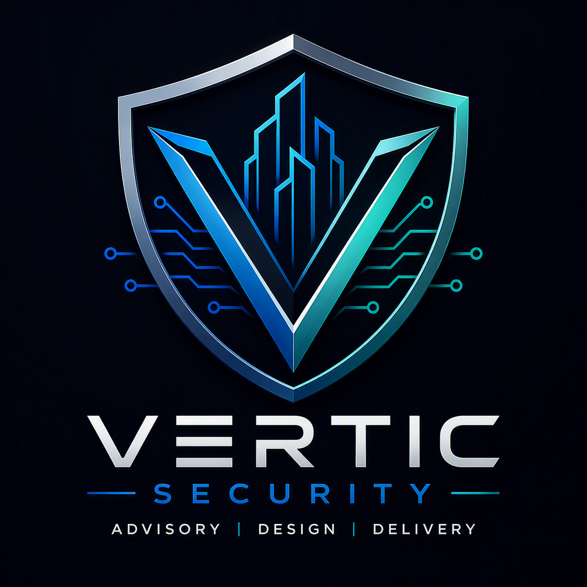

Security built for critical environments.
Vertic Security combines independent advisory, engineered physical security design and technology delivery for data centres, critical infrastructure, government and complex enterprise environments.

One outcome across the entire security lifecycle.
Strategy, engineered design, technology delivery and assurance are treated as one connected pathway.
Define the risk
Strategies, risk assessments, governance and investment priorities.
Engineer the solution
Access control, video, intrusion, intercom, perimeter and infrastructure.
Integrate technology
Installation, configuration, integration, testing and handover.
Verify performance
Reviews, commissioning support, acceptance and defect closure.
Security is part of the facility, not an add-on.
Effective security depends on architecture, door hardware, pathways, power, networks, devices, platforms, procedures and responder information working together.
- Electronic access control and alarms
- Video surveillance and analytics
- Intrusion detection and intercom
- Security operations centres
- Perimeter, gates and barriers
- Programming, testing and commissioning
CONTROL
SYSTEMS
& INTERCOM
& POWER
High-consequence environments.
Data centres
High availability, layered protection and controlled commissioning.
Critical infrastructure
Essential services, operational assets and resilience.
Government
Protective security and secure-facility programs.
Enterprise
Campuses, portfolios, upgrades and major developments.
Platform experience across modern security environments.
Vertic Security provides vendor-neutral advisory, design and delivery across established security and infrastructure technologies. Platform selection remains subject to project requirements and client approval.
Accountability built into delivery.
Master Security Licence No. 000109008